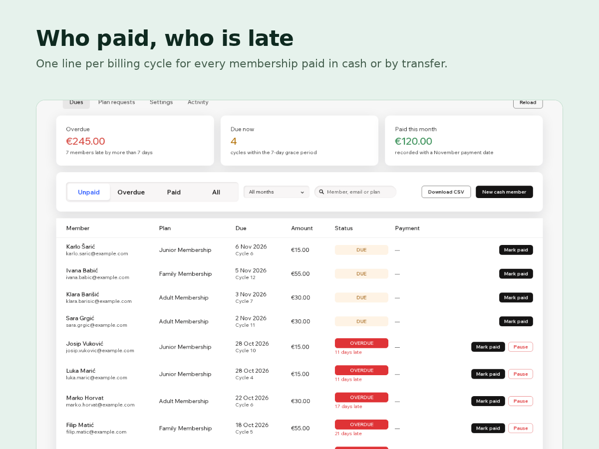

Plan Dues
Track cash and bank-transfer membership dues
- Let clients ask for a plan and pay by transfer
- See who paid this month and who is overdue
- Pause late memberships, resume when paid
- Monthly dues list as CSV for your treasurer

What it does
Clubs, studios and associations often collect membership dues in cash or by bank transfer, while the plans on the site only take cards. So someone keeps a spreadsheet of who paid this month. Plan Dues replaces that spreadsheet and works with the plans you already sell.
Each membership sold offline gets one line per billing cycle: due date, amount, paid or not. A cycle turns overdue a set number of days after its due date, and you see how much is still out and from whom. Record a payment with its date and amount, and pause a membership when the dues stay unpaid. When the money comes in, record it and resume the membership in the same step.
Premium adds plan requests. Put a form on your site where people choose a plan and pick bank transfer or cash. Each answer shows up as a request; you send your payment details with name, plan and amount filled in, and when the money arrives one click gives them the plan and records the first payment. Premium also follows every offline membership, not just the first 15, keeps the method and reference of each payment, can pause late memberships for you after the number of days you choose, and downloads each month as a CSV for your treasurer.
Price
Free
Premium
$6/month, $60/year ($5/month billed yearly)
- Every offline membership tracked
- Plan requests from a site form
- Auto-pause after days unpaid
- Payment method, reference and CSV